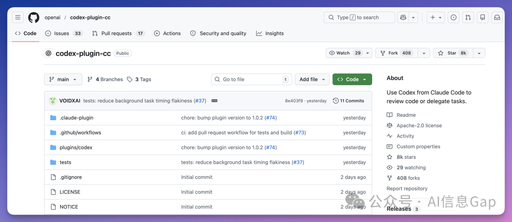
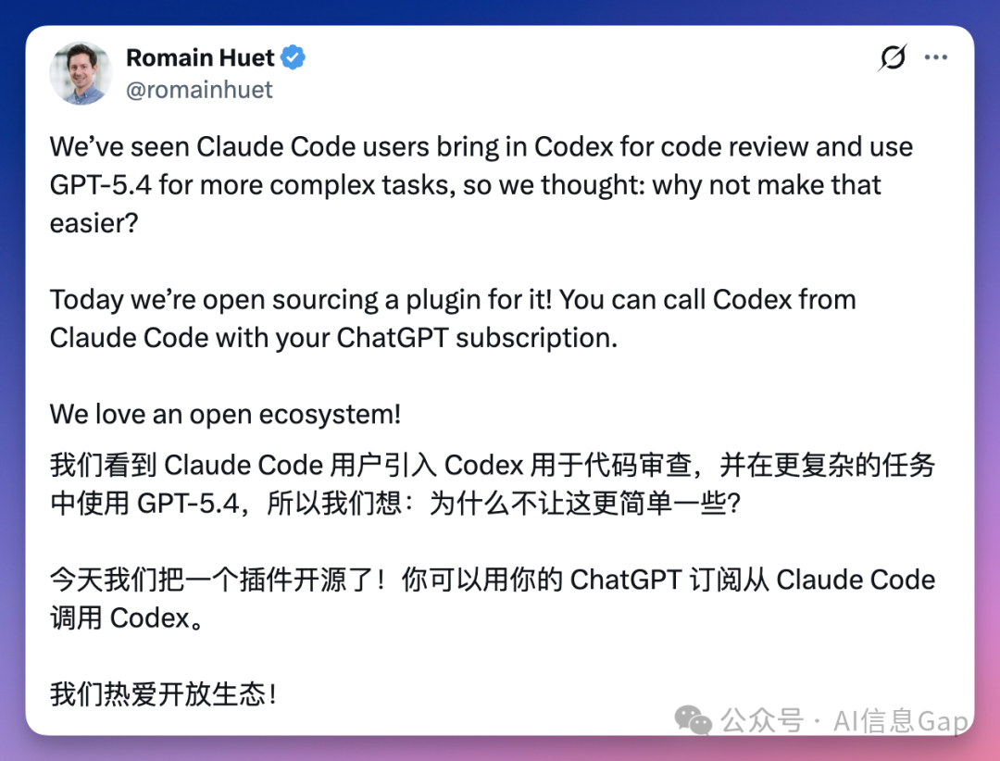
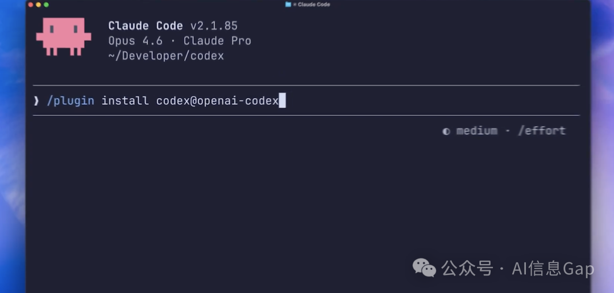
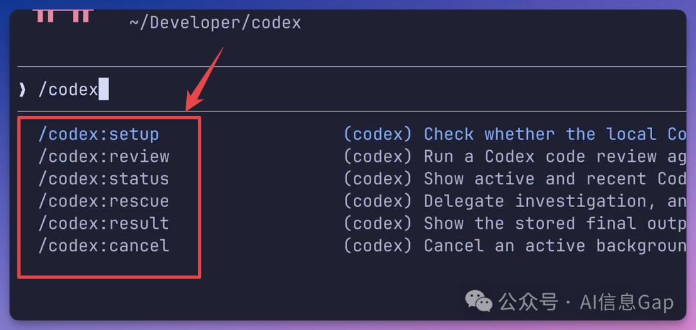

OpenAI 官方出了 Claude Code 插件，在对手地盘上抢活
来源：微信公众号 归档日期：2026-04-07 抓取状态：成功 原文字符：3144｜配图：5 张
摘要速览
Claude Code 用户想用 Codex 做代码审查或跑复杂任务时，需要自己手动接。OpenAI 干脆做了个官方插件 codex-plugin-cc，三条命令装好，直接在 Claude Code 里调 Codex。
核心内容
- 背景：Claude Code 年化收入 25 亿美元、日均 13.5 万 GitHub 提交。OpenAI 内部启动"红色警戒"（Code Red），砍掉 Sora/Atlas/硬件项目，算力全押推理和编程。打不过就加入
- 安装方式：三条命令搞定，Node.js 18.18+
```bash /plugin marketplace add openai/codex-plugin-cc /plugin install codex@openai-codex /reload-plugins ``` 然后 /codex:setup 自动检测 Codex CLI，ChatGPT 免费用户也能用
- 核心命令：
/codex:review— 代码审查，只看不改。--base main覆盖整个分支，--background多文件后台运行/codex:adversarial-review— 对抗式审查，故意挑毛病，追问竞态条件、回滚方案/codex:rescue— 把活儿甩给 Codex 后台跑，你继续用 Claude Code 干别的。--model gpt-5.4-mini --effort medium省 token/codex:status和/codex:result— 查后台任务进度和结果- 实验功能：强制审查门：
/codex:setup --enable-review-gate，关闭 Claude Code 前 Codex 自动审查拦截。官方警告：两个 AI 互审可能死循环，配额烧得快 - 商业逻辑：每次在 Claude Code 里触发 Codex 命令，底层跑 OpenAI 模型，消耗 ChatGPT 配额。用户在 Anthropic 的店里，一部分钱流向 OpenAI
可执行启发
（待补充）
我的想法
（待补充——可以想想：1. 自己的 Claude Code 工作流是否值得装这个插件，特别是 adversarial-review 在上线前做最后一道检查 2. 这种"在竞对产品里插管子抢收入"的商业策略本身就值得记录，对理解 AI 行业竞争格局有帮助）
为什么有用
Claude Code + Codex 双引擎组合可以立刻用起来：Claude 写代码，Codex 审代码，两个模型互补。对抗式审查（adversarial-review）特别适合重要代码上线前用，比自己 review 靠谱。rescue 命令让你同时跑两个 AI 干不同的活，并行效率翻倍。
适用 / 不适用场景
- 适用：日常用 Claude Code 写代码的人、想要 AI 代码审查能力的开发者、需要双模型并行提效的场景
- 不适用：不用 Claude Code 的人、对 OpenAI 配额消耗敏感的场景（两个 AI 互审可能很费 token）
原文沉淀
你现在可以在 Claude Code 里用 Codex 了。
还是 OpenAI 官方出的开源插件。
GitHub 仓库名叫 codex-plugin-cc。cc，Claude Code 的缩写。两天，8000 个 star。

把自家的 AI 编程助手 Codex 做成插件，装进竞争对手 Anthropic 的 Claude Code 里。
OpenAI，你真是个「商业鬼才」。
这就相当于你去肯德基点餐，菜单上多了个麦当劳。
OpenAI 开发者体验负责人 Romain Huet 这样说。
「我们看到 Claude Code 用户已经在自己接 Codex 做代码审查，并在复杂任务中用 GPT-5.4。我们就想，何不让这更简单一点？」

这条推文，88 万次浏览。翻译一下，「打不过就加入。」
Claude Code 年化收入 25 亿美元，每天有 13.5 万个 GitHub 提交。OpenAI 应用 CEO Fidji Simo 两周前在内部全员大会上直接启动了「红色警戒」Code Red。然后砍掉了 Sora、Atlas 浏览器、硬件项目。算力资源全部押到更赚钱的推理、编程上。
OpenAI，慌了。
现在就能用。前提条件，Node.js 18.18 以上版本。
打开 Claude Code，三条命令搞定。
/plugin marketplace add openai/codex-plugin-cc
/plugin install codex@openai-codex
/reload-plugins
然后运行 /codex:setup，它会自动检测你本地有没有安装 Codex CLI。没有的话它会帮你装，你也可以自己来，npm install -g @openai/codex。
划重点，这个插件不会另外装一套 Codex。它直接调用你电脑上已有的 Codex CLI，配置和登录状态全部共用。没登录的话，在 Claude Code 里输入 !codex login。ChatGPT 账号或 OpenAI API Key 都能登。
ChatGPT 免费用户也能用，有 ChatGPT 账号就行。插件用量自动算入你的 Codex 配额。
配置完你的 Claude Code 会多出一组命令。

/codex:review，让 Codex 帮你过一遍代码，只看不改。默认审查当前未提交的修改，加个 --base main 覆盖整个分支。多文件改动可以加 --background，Codex 自动在后台运行。
/codex:review --base main --background审完了用 /codex:status 查进度，/codex:result 看结果。
/codex:adversarial-review，故意挑毛病。它专门质疑你的设计选择，追问竞态条件，挑战你的回滚方案。还可以指定让它重点关注某个方向，比如：
/codex:adversarial-review --background look for race conditions/codex:rescue，直接把活儿甩给 Codex。写代码、调试 bug，Codex 化身后台牛马，你还能继续用 Claude Code 干别的。想省 token 还可以指定小模型。
/codex:rescue --model gpt-5.4-mini --effort medium fix the flaky testOpenAI 这招，绝了。
还有个实验功能，「强制审查」。
运行 /codex:setup --enable-review-gate，开启之后每次你关闭 Claude Code 前，Codex 都会自动审查。有问题直接拦住，让 Claude 改完再说。
OpenAI 自己在文档里加了个警告，「两个 AI 互审，可能陷入死循环，配额烧得飞快。建议盯着屏幕的时候再开。」
每一次你在 Claude Code 里触发 /codex:review，底层跑的都是 OpenAI 的模型，消耗的都是你的 ChatGPT 配额。
这就相当于你来到 Anthropic 的店里，但有一部分钱流向了 OpenAI。
开发者选了 Claude Code，OpenAI 选择「打不过就加入」。
我是木易，Top2 + 美国 Top10 CS 硕，现在是 AI 产品经理。 关注「AI信息Gap」，让 AI 成为你的外挂。
归属：[[02-输入/按主题/工具与技术/_index|工具与技术]]